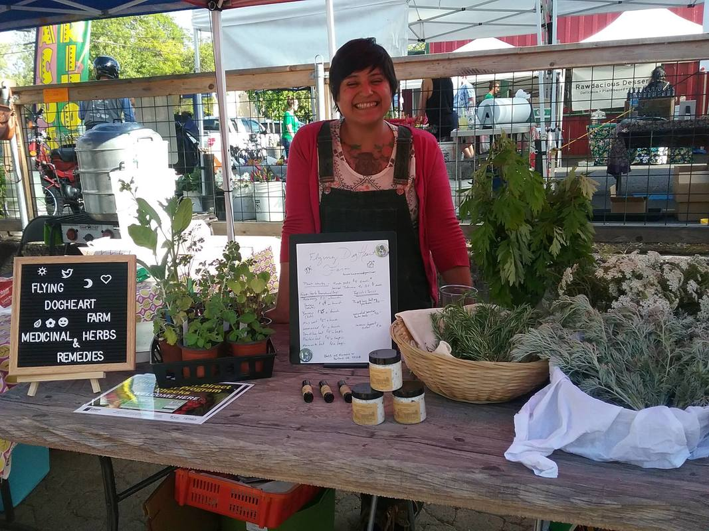

The community apothecary project is a volunteer lead project that uses the surplus herbs and tinctures our farm produces and provides it for free for our neighbors.
we envision supporting other herbal projects lead by community members by offering collaborative support and community learning opportunities.

The Farm
We are young farmers in collective. Proud member and co-founder of the Raceme Farm Collective. We farm with Scrapberry Farm and Sun Moon Fields, and are in community with farmers at Black Futures Farm and Unity Farm.
You can find our products at the Come Thru PDX Market every other Monday at the Redd East, occasionally at the Montavilla Farmers Market on the 4th Sunday, at Seagrape Apothecary and at Luna Wellness PDX. We are always at the Come Thru PDX Market every 1st and 3rd Monday, May–October.
Our mircro-farm, where we grow herbs, raise rabbits for meat and hens for egg production, is located in what is known as Portland. (As well as scattered sites in Portland.)
We use a combination of conventional and traditional indigenous farm practices. We never use chemical pesticides or other chemically based methods for our growing. We grow seed-to-finish: Herbs, Produce, and Flowers.
In addition to farming small livestock and herbs, we also teach backyard chicken and rabbit raising, dispatching classes, and garden design consultation. We are also available for tailored classes and one-on-one consultations
